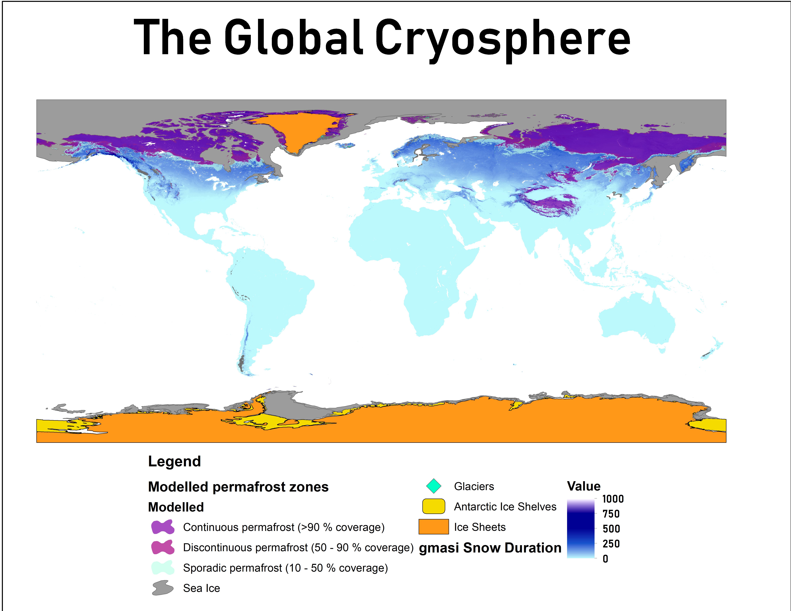

The cryosphere — Earth’s frozen water in all its forms — is one of the most visually compelling and scientifically critical subjects in modern geography. This was among my first major projects when I began my GIS and cartography studies. For a class I took in the Spring of 2018, I worked alongside a climatologist at UW-Madison’s Space Science and Engineering Center (SSEC) – a NOAA affiliate office.
My task was to map out six different layers – Antarctic ice shelves, glaciers, ice sheets, permafrost, sea ice, and seasonal snow cover – in three different projections: the North Pole, South Pole, and globe-extent in a Plate Carrée equirectangular, or WGS84 projection. Except for the permafrost, all layers are in vector format.
The objective was to show the incremental change of these cryogenic layers over time, which is most evident in the permafrost layer. Together, the maps highlight how projection choice fundamentally shapes how we perceive ice coverage, extent, and the relationship between frozen regions and the rest of the planet.
